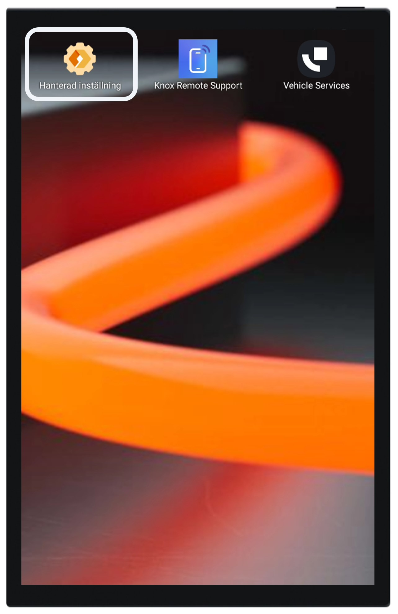
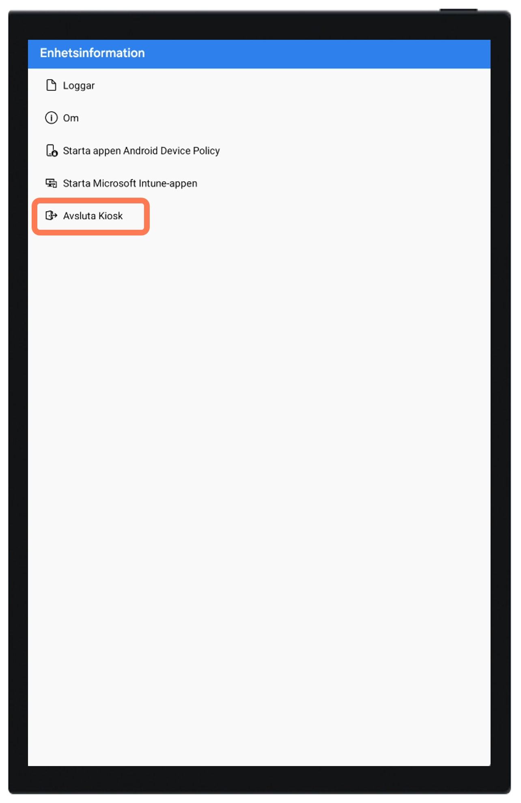
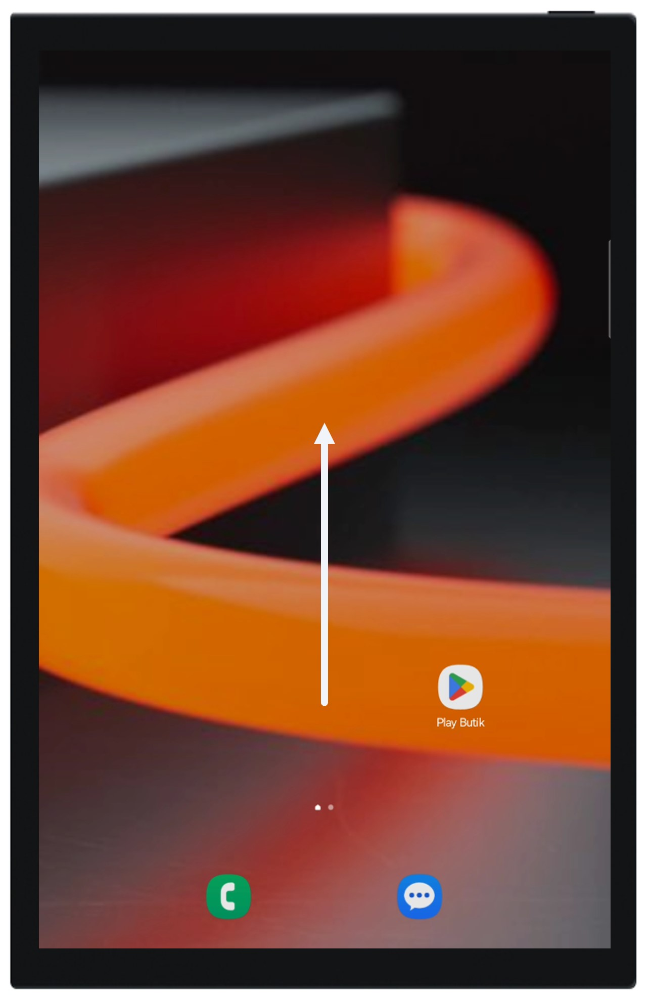

Guide to managing kiosk mode devices¶
Attention
Devices shipped from January 2024 and onwards implement a kiosk mode for improved usability of the device.
Devices shipped prior to January 2024 does not implement this functionality.
Table of contents
General description¶
The kiosk-mode, provides a controlled and restricted user interface environment. It clears up the user interface and make sure that only authorized administrators have access to device settings and similar features.
Key benefits¶
Enhanced Security: By restricting access to only authorized applications, kiosk-mode enhances device security, reducing the risk of unauthorized access or misuse.
Simplified User Experience: Users are presented with a streamlined interface, tailored to their specific needs and tasks. This simplifies navigation and reduces the chances of users getting lost or confused within the device’s interface.
Focused Productivity: With access limited to essential applications and functions, users can stay focused on their tasks without distractions from unrelated apps or features.
Functionality within the kiosk mode¶
Within the kiosk mode the user can only reach the following functions:
Vehicle Services: The platform for emergency vehicles with your collection of apps.
Knox Remote Support: Launch a remote support session with a member of our support team.
All other applications and settings are fully disabled in the kiosk mode. To access these exit the kiosk mode
Rebooting the device¶
In case you need to reboot or shut off the device the following applies:
Within kiosk mode: If the device is rebooted or shut off from within kiosk mode the device will automatically boot into the kiosk mode again.
Outside of the kiosk mode: If the device is rebooted or shut off from outside of the kiosk mode the device will automatically boot into beeing outside of the kiosk mode again.
Exiting and entering the kiosk-mode¶
Exiting the kiosk mode:¶
Start exiting the kiosk mode by pressing “Managed settings” on the home screen alternatively the cog wheel in the top right corner depending on installation setup

Press the information button (If not avialable proceed to the next step)

Press “Exit kiosk” and enter the administration code. The default code is always set to “1234”

You have now exited the kiosk mode
In this mode you now have full control of the settings of the device and can setup and manage things like WiFi-connections, Bluetooth and similar.
Entering the kiosk mode¶
To enter the kiosk mode start by swiping from the middle of the screen and upwards to open the app-menu

Click on “ManagedHomeScreen”

You have now entered the kiosk mode
Within the kiosk mode the user can only start Vehicle Services and launch a remote support session by starting “Knox Remote Support”.